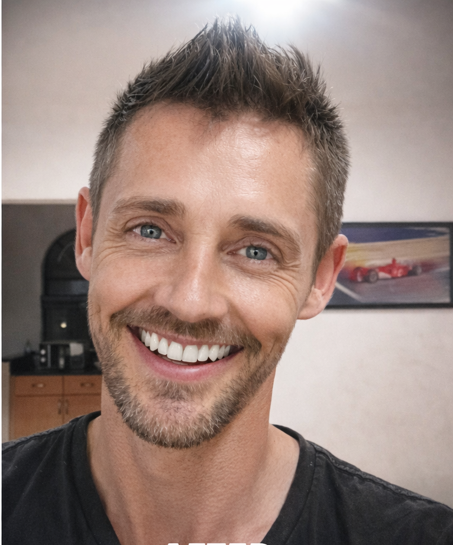

Stiaan du Plessis
Application — Social Media Content Creator
"The feeling when a neighbour slows down." — that's the kind of before/after moment I build content around, and exactly the reaction your construction and home-improvement clients want from every post.
I make people stop scrolling at a transformation. Below isn't a portfolio of ideas — it's real before/after
photography, a real published social ad, a real short-form video reel, and a real website, all built and
shipped by me for an outdoor-transformation brand. I plan content, shoot and edit it in Canva, design the
graphics, and build the web presence that holds it together — independently, on deadline, with no hand-holding.
That's the exact mix a remote, multi-client social role needs.
Proof, Not Promises
R1.5M→R18M
Property value growth I helped drive through rebrand & marketing
6 yrs
Leading a brand rebuild, events & promotion solo
2014
NLP Practitioner, NLP World UK — reading an audience
5+
Live brand & web builds shipped end-to-end
Background
Freelance Digital Designer & Web Builder
Self-employed — ongoing
Social graphics, reels, presentations and full brand websites for small businesses, churches and community organisations — Canva to code.
General Manager — Buffalo Hotel, Hectorspruit
6 years
Personally ran the rebrand, events (Kissing the Buffalo Bar nights, Sunday buffets, Annual Buffalo Festival, MTB racing), marketing and graphic design that grew the property from R1.5m to R18m.
Founder — Let Me Get It & InsightForge
Personal projects — ongoing / in development
A community referral platform and an AI-powered business discovery tool — both built solo, both about understanding what makes people engage.
What I Bring
Canva (graphics & mobile video)
Short-form / reel editing
Before/after campaign content
Brand & logo design
Web design & development
Content planning
NLP Practitioner — audience insight
Independent remote delivery
Whatever your construction and home-improvement clients need to see on their feed — I'll plan it, shoot it, design it, and ship it.
Stiaan du Plessis
iamstiaan@gmail.com · 071 770 0072